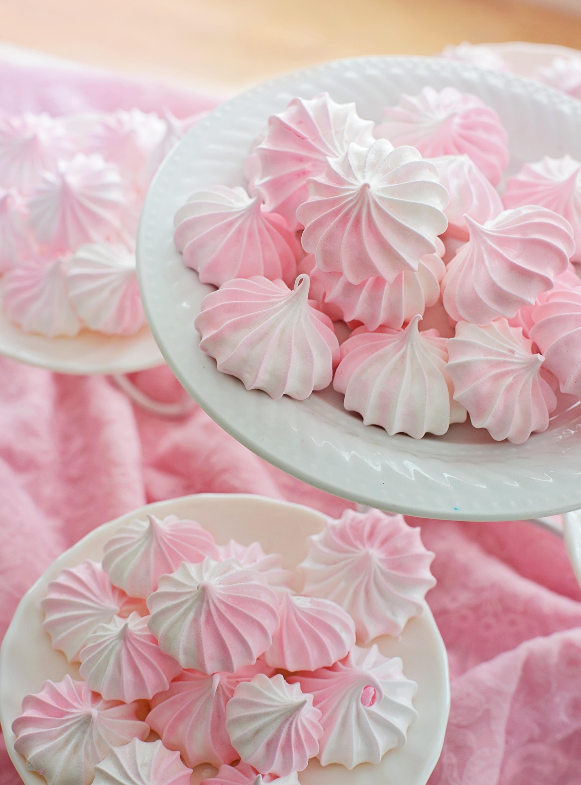

Suspiros

Una joya de la repostería tradicional: ligeros, crujientes por fuera y
suavemente cremosos por dentro. Estos bocados de merengue horneado aportan
una dulzura delicada que se deshace al instante en la boca, ideales para
acompañar el café o decorar otros postres.
Ingredientes
- 3 claras de huevo
- 200g de azucar blanca
- 1/2 cucharadita de jugo de limon
- 1 cucharadita de esencia de Vainilla
- 1 pizca de sal
Preparacion
- Bate las claras con la pizca de sal en un tazon limpio y seco hasta que comiencen a formar espuma blanca
- Aniade el azucar poco a poco en forma de lluvia sin dejar de batiar a velocidad media-alta, hasta obtener un merengue firme y brillante con picos duros
- Incorpora el jugo de limon y la esencia de vainilla, bate durante 30 segundos mas solo para integrar
- Pasa la mezcla a una manga pastelera con boquilla rizada y forma pequenios copitos sobre una bandeja cubierta con papel para hornear
- Hornea a 100°C durante 60 minutos. Apaga el horno y dejalos enfriar adentro con la puerta entreabierta para que mantengan su textur crocante
Postres